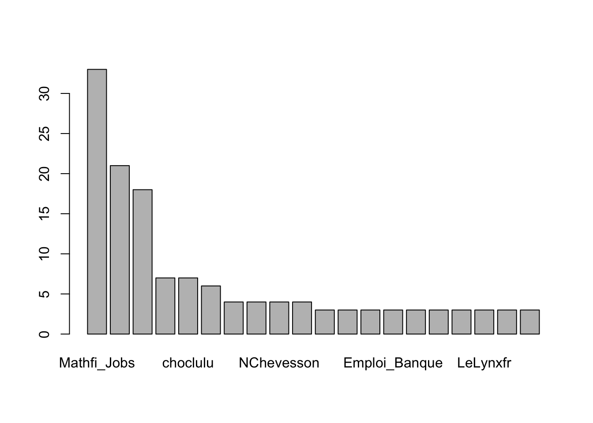
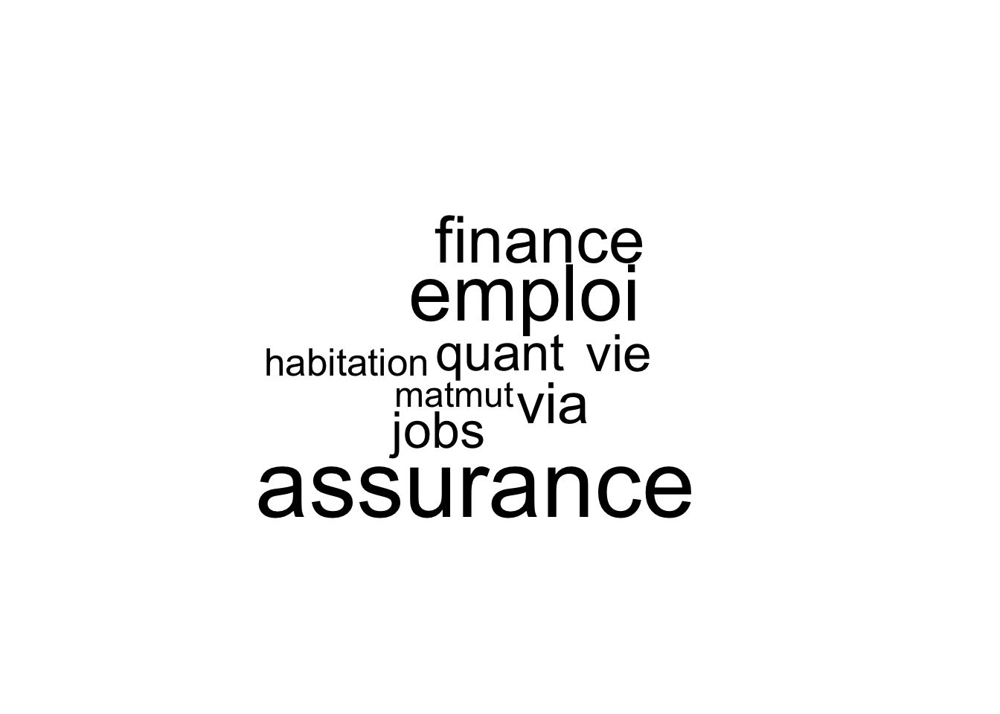

Récupérer des tweets et les analyser
install.packages("twitteR")
install.packages("wordcloud")
install.packages("tm")
update.packages("tm")
install.packages('base64enc')
install.packages('httk')
install.packages('httpuv')
install.packages('SnowballC')library("twitteR")
library("wordcloud")
library("tm")
library(RCurl)
library(httr)
library(SnowballC)
library(stringr)
# library('httk')
# library('httpuv')le code peut être nécessaire en de proxy
set_config( config( ssl_verifypeer = 0L ) )
set_config(use_proxy(url='http://proxyna',80,"k.shi",""))
download.file(url="http://curl.haxx.se/ca/cacert.pem", destfile="cacert.pem")Au préalable, il faut créer un compte twitter et créer une application afin d’avoir l’accès à l’API.
#to get your consumerKey and consumerSecret see the twitteR documentation for instructions
consumer_key <- 'L1LTlJ4DxtJoF9SIZ6OFALDVP'
consumer_secret <- 'n4jbl6Nk1cwhOMgi3aMiDwyVkFxeic3tEXgvvOMgAQzVEE8WNI'
access_token="2351383752-uTjsLG6sCa8XC3ZSjqwrwreWMYaOvJKmU1eSSEV"
access_token_secret=" n2p4jknTtO65cSf0SSc5ilT40cSeReW62bhT6KO4Q5Omp"
setup_twitter_oauth(consumer_key,consumer_secret,access_token,access_token_secret)
setup_twitter_oauth(consumer_key,consumer_secret)Dans certains cas de blocage, le code suivant est nécessaire
library(httr)
# 1. Find OAuth settings for twitter:
# https://dev.twitter.com/docs/auth/oauth
oauth_endpoints("twitter")
# 2. Register an application at https://apps.twitter.com/
# Make sure to set callback url to "http://127.0.0.1:1410"
#
# Replace key and secret below
myapp <- oauth_app("twitter",
key = "L1LTlJ4DxtJoF9SIZ6OFALDVP",
secret = "n4jbl6Nk1cwhOMgi3aMiDwyVkFxeic3tEXgvvOMgAQzVEE8WNI"
)
# 3. Get OAuth credentials
twitter_token <- oauth1.0_token(oauth_endpoints("twitter"), myapp)
# 4. Use API
req <- GET("https://api.twitter.com/1.1/statuses/home_timeline.json",
config(token = twitter_token))
stop_for_status(req)
content(req)tweets <- searchTwitter("assurance", n=1000,lang="fr")
tweets <- userTimeline("argusassurance", n=1000)Sauvegarder les tweets
save(tweets,file="tweets.Rdata")load("tweets.Rdata")
head(tweets)## [[1]]
## [1] "AllianzBeauvais: - 25% sur votre assurance habitation \xed\xa0\xbc\xed\xbf\xa0 en souscrivant à l' assurance emprunteur ! → https://t.co/qp0YYZWrnP https://t.co/A7GVWxUnae #All…"
##
## [[2]]
## [1] "er_pirson: RT @Santhea_be: @Santhea_be auditionné au Parlement wallon dans le cadre de l'assurance autonomie https://t.co/VCmngVDgCt"
##
## [[3]]
## [1] "cargnelli_info: #PUBLIC Assurance habitation : l'Ile-de-France est la région la plus chère https://t.co/Lwvukl1Jgq | https://t.co/7cFrut4RGL"
##
## [[4]]
## [1] "fromagedebrebis: RT @rimydrasil: @MAIF Merci pour la bonne surprise quand j'ai appris que le bien que je me suis fait voler ne me sera pas du tout couvert p…"
##
## [[5]]
## [1] "JeanVal26536332: @cathyhope2 Mon assurance-vie donne TOUT à Marie-France et ses Oeuvres @CorinnePerpinya"
##
## [[6]]
## [1] "congresVIE: RT @journ_assurance: Le Congrès 2016 de l’assurance et de l’investissement : c’est demain !\n https://t.co/3y8Uzwpd0t #CongresVIE2016 @congr…"df <- do.call("rbind", lapply(tweets, as.data.frame))
head(df)## text
## 1 - 25% sur votre assurance habitation \xed\xa0\xbc\xed\xbf\xa0 en souscrivant à l' assurance emprunteur ! → https://t.co/qp0YYZWrnP https://t.co/A7GVWxUnae #All…
## 2 RT @Santhea_be: @Santhea_be auditionné au Parlement wallon dans le cadre de l'assurance autonomie https://t.co/VCmngVDgCt
## 3 #PUBLIC Assurance habitation : l'Ile-de-France est la région la plus chère https://t.co/Lwvukl1Jgq | https://t.co/7cFrut4RGL
## 4 RT @rimydrasil: @MAIF Merci pour la bonne surprise quand j'ai appris que le bien que je me suis fait voler ne me sera pas du tout couvert p…
## 5 @cathyhope2 Mon assurance-vie donne TOUT à Marie-France et ses Oeuvres @CorinnePerpinya
## 6 RT @journ_assurance: Le Congrès 2016 de l’assurance et de l’investissement : c’est demain !\n https://t.co/3y8Uzwpd0t #CongresVIE2016 @congr…
## favorited favoriteCount replyToSN created truncated
## 1 FALSE 0 <NA> 2016-11-16 18:53:33 FALSE
## 2 FALSE 0 <NA> 2016-11-16 18:53:05 FALSE
## 3 FALSE 0 <NA> 2016-11-16 18:52:10 FALSE
## 4 FALSE 0 <NA> 2016-11-16 18:51:35 FALSE
## 5 FALSE 0 cathyhope2 2016-11-16 18:50:36 FALSE
## 6 FALSE 0 <NA> 2016-11-16 18:50:22 FALSE
## replyToSID id replyToUID
## 1 <NA> 798962227093061633 <NA>
## 2 <NA> 798962108616429569 <NA>
## 3 <NA> 798961878940553217 <NA>
## 4 <NA> 798961732349788165 <NA>
## 5 798960804762677248 798961485645021190 572808495
## 6 <NA> 798961424705851392 <NA>
## statusSource
## 1 <a href="http://ifttt.com" rel="nofollow">IFTTT</a>
## 2 <a href="http://twitter.com/download/iphone" rel="nofollow">Twitter for iPhone</a>
## 3 <a href="http://dlvr.it" rel="nofollow">dlvr.it</a>
## 4 <a href="http://twitter.com" rel="nofollow">Twitter Web Client</a>
## 5 <a href="http://twitter.com" rel="nofollow">Twitter Web Client</a>
## 6 <a href="https://about.twitter.com/products/tweetdeck" rel="nofollow">TweetDeck</a>
## screenName retweetCount isRetweet retweeted longitude latitude
## 1 AllianzBeauvais 0 FALSE FALSE NA NA
## 2 er_pirson 2 TRUE FALSE NA NA
## 3 cargnelli_info 0 FALSE FALSE NA NA
## 4 fromagedebrebis 1 TRUE FALSE NA NA
## 5 JeanVal26536332 0 FALSE FALSE NA NA
## 6 congresVIE 1 TRUE FALSE NA NAnames(df)## [1] "text" "favorited" "favoriteCount" "replyToSN"
## [5] "created" "truncated" "replyToSID" "id"
## [9] "replyToUID" "statusSource" "screenName" "retweetCount"
## [13] "isRetweet" "retweeted" "longitude" "latitude"counts=table(df$statusSource)
head(sort(counts,decreasing = TRUE),10)##
## <a href="http://twitter.com" rel="nofollow">Twitter Web Client</a>
## 238
## <a href="http://twitter.com/download/iphone" rel="nofollow">Twitter for iPhone</a>
## 204
## <a href="http://twitter.com/download/android" rel="nofollow">Twitter for Android</a>
## 168
## <a href="http://www.maths-fi.com/" rel="nofollow">MathsFi Twitt</a>
## 54
## <a href="https://about.twitter.com/products/tweetdeck" rel="nofollow">TweetDeck</a>
## 34
## <a href="http://dlvr.it" rel="nofollow">dlvr.it</a>
## 32
## <a href="http://www.hootsuite.com" rel="nofollow">Hootsuite</a>
## 31
## <a href="http://ifttt.com" rel="nofollow">IFTTT</a>
## 28
## <a href="http://bufferapp.com" rel="nofollow">Buffer</a>
## 20
## <a href="http://www.facebook.com/twitter" rel="nofollow">Facebook</a>
## 19counts=table(df$screenName)
head(sort(counts,decreasing = TRUE),20)##
## Mathfi_Jobs Emploi_Finance christophevx 4closersonly
## 33 21 18 7
## choclulu CGPIFriendly bearlytech journ_assurance
## 7 6 4 4
## NChevesson Orcialis cargnelli_info drpatrickczerw1
## 4 4 3 3
## DuquesnelLuc Emploi_Banque FP_Eco GWotasek
## 3 3 3 3
## ImmoProConcept LeLynxfr Montreal__jobs NA_Pro
## 3 3 3 3barplot(head(sort(counts,decreasing = TRUE),20))
tweets_text <- sapply(tweets, function(x) x$getText())
head(tweets_text)## [1] "- 25% sur votre assurance habitation \xed\xa0\xbc\xed\xbf\xa0 en souscrivant à l' assurance emprunteur ! → https://t.co/qp0YYZWrnP https://t.co/A7GVWxUnae #All…"
## [2] "RT @Santhea_be: @Santhea_be auditionné au Parlement wallon dans le cadre de l'assurance autonomie https://t.co/VCmngVDgCt"
## [3] "#PUBLIC Assurance habitation : l'Ile-de-France est la région la plus chère https://t.co/Lwvukl1Jgq | https://t.co/7cFrut4RGL"
## [4] "RT @rimydrasil: @MAIF Merci pour la bonne surprise quand j'ai appris que le bien que je me suis fait voler ne me sera pas du tout couvert p…"
## [5] "@cathyhope2 Mon assurance-vie donne TOUT à Marie-France et ses Oeuvres @CorinnePerpinya"
## [6] "RT @journ_assurance: Le Congrès 2016 de l’assurance et de l’investissement : c’est demain !\n https://t.co/3y8Uzwpd0t #CongresVIE2016 @congr…"tweets_text=str_replace_all(tweets_text,"[^[:graph:]]", " ")
tweets_text=iconv(tweets_text, "latin1", "ASCII", sub="")
tweets_text=unique(tweets_text)
myCorpus <- Corpus(VectorSource(tweets_text))
as.character(myCorpus[[1]])## [1] "- 25% sur votre assurance habitation en souscrivant l' assurance emprunteur ! https://t.co/qp0YYZWrnP https://t.co/A7GVWxUnae #All"# inspect(myCorpus)myCorpus =tm_map(myCorpus ,content_transformer(tolower),lazy=TRUE)
myCorpus <- tm_map(myCorpus, removePunctuation,lazy=TRUE)
myCorpus <- tm_map(myCorpus, removeNumbers,lazy=TRUE)
myStopwords <- c(stopwords('french'), "assureurs",
"assurance","lassurance","assurances",
"secteur","https...","pour")
myCorpus <- tm_map(myCorpus, removeWords, myStopwords,lazy=TRUE)
myCorpus <- tm_map(myCorpus, PlainTextDocument,lazy=TRUE)
as.character(myCorpus[[1]])## [1] " habitation souscrivant emprunteur coqpyyzwrnp coagvwxunae all"as.character(myCorpus[[2]])## [1] "rt santheabe santheabe auditionn parlement wallon cadre autonomie covcmngvdgct"wordcloud(myCorpus,min.freq=20)dtm <- TermDocumentMatrix(myCorpus, control = list(minWordLength = 10))findFreqTerms(dtm, lowfreq=30)## [1] "assurance" "emploi" "finance" "habitation" "jobs"
## [6] "matmut" "quant" "via" "vie"findAssocs(dtm, 'finance', 0.30)## $finance
## emploi quant consultant
## 0.77 0.69 0.59
## jobs murex annee
## 0.56 0.50 0.44
## cadextan fonctionnel operations
## 0.44 0.44 0.44
## softeam lunalogic ecole
## 0.44 0.42 0.39
## ingenieur experimente net
## 0.39 0.38 0.38
## cplusplus developpement grenoble
## 0.37 0.36 0.36
## ingenieurbacmaster moody paris
## 0.36 0.36 0.35
## big analytics cosleolzijn
## 0.33 0.32 0.31
## coxxlwjlvk ingenieurba ingenieurbac
## 0.31 0.31 0.31findAssocs(dtm, 'emploi', 0.30)## $emploi
## finance lunalogic quant
## 0.77 0.51 0.51
## paris cplusplus ingenieurbacmaster
## 0.50 0.49 0.49
## codfxjjcelz ingenieur murex
## 0.48 0.46 0.44
## prog developpement grenoble
## 0.40 0.39 0.39
## moody consultant analytics
## 0.39 0.38 0.36
## big cadextan ecole
## 0.35 0.32 0.32
## jobs product softeam
## 0.32 0.32 0.32
## coiyfghc
## 0.31findAssocs(dtm, 'matmut', 0.30)## $matmut
## tarifs confirme venir contexte difficile
## 0.57 0.54 0.54 0.51 0.51
## hausse multiplie partenariats auto chevalier
## 0.51 0.51 0.51 0.40 0.40
## laspals adieu dommages latribune
## 0.40 0.31 0.31 0.31findAssocs(dtm, 'vie', 0.30)## $vie
## buisson patrick systme meilleure sapin
## 0.38 0.38 0.38 0.35 0.34m <- as.matrix(dtm)
v <- sort(rowSums(m), decreasing=TRUE)
myNames <- names(v)
d <- data.frame(word=myNames, freq=v)
wordcloud(d$word, d$freq, min.freq=30)
Copyright © 2016 Kezhan SHI